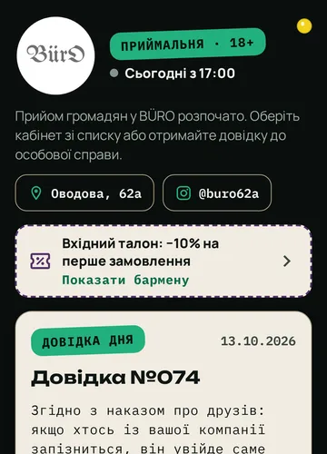

New · AI supportCase 01
flight-claims-support-agent
A first-line AI agent for a flight-compensation claims service. A Claude skill writes the replies; a plain Python layer decides when the AI may answer and when a person takes over: money, legal threats, GDPR, upset customers, weak matches. Includes an EU261 eligibility check, an eval set of real-style messages and 26 tests in CI.
Claude skillsPythonpytestGitHub Actions
> triage("30% fee?! This is a scam!!!")
intent: fee_question
action: human_handoff
priority: high
why: Customer is upset;
a person should reply.
Mobile appCase 02
BÜRO — app for a bar I co-own
iOS, Android and web app for a bar in Vinnytsia, styled as a friendly parody of bureaucracy: board games, tournaments, darts scoring, a "find company" board and a certificate of the day. Built solo with AI coding agents: ~15,600 lines of TypeScript, 331 tests, Supabase with row-level security, Poster POS integration.
ExpoReact NativeTypeScriptSupabasePlaywright

AI workflowCase 03
one-system
My daily setup where Claude Code, Codex and Hermes work as one team: a shared skill registry, a task bus, agent-to-agent delegation, cost-aware routing across quotas and free models, and an ordered review pipeline.
BashPythonNode.jsClaude Code
BackendCase 04
bureau-api
Tournament and Elo rating service for the BÜRO app: knockout and round-robin brackets, seeding by rating, results that apply exactly once under concurrent submissions, tests on SQLite and PostgreSQL in CI.
FastAPISQLAlchemyAlembicDocker
RAGCase 05
aloha-rag-demo
Public demo of the knowledge system I built and run at work: retrieval over a structured support knowledge base with ranked sources. Synthetic NCR Aloha-style data only.
PythonFlaskRetrieval
FrontendCase 06
Figma-to-code sites
Two responsive React/Vite implementations of supplied Figma designs, with accessibility, reduced-motion support, tests and security headers. Non-commercial portfolio work.
ReactViteCloudflare Pages